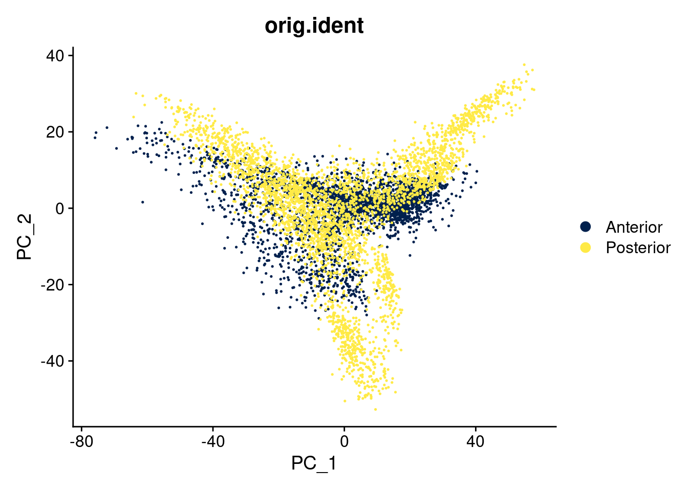
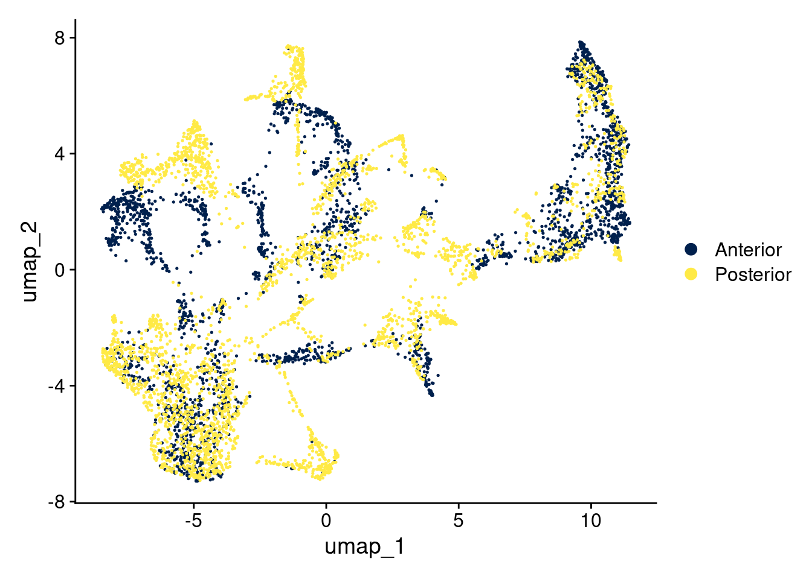

library(Seurat)
library(ggplot2)
library(clustree)
library(patchwork)
library(dplyr)Integration and clustering
seu_list <- readRDS("output/normalized.rds")
seu <- merge(seu_list[[1]], seu_list[[2]])VariableFeatures(seu) <- intersect(VariableFeatures(seu_list$Anterior),
VariableFeatures(seu_list$Posterior))
seu <- RunPCA(seu, assay = "SCT", npcs = 50, verbose = FALSE)
seu <- RunUMAP(seu, reduction = "pca", dims = 1:50)Warning: The default method for RunUMAP has changed from calling Python UMAP via reticulate to the R-native UWOT using the cosine metric
To use Python UMAP via reticulate, set umap.method to 'umap-learn' and metric to 'correlation'
This message will be shown once per session14:57:30 UMAP embedding parameters a = 0.9922 b = 1.11214:57:30 Read 6039 rows and found 50 numeric columns14:57:30 Using Annoy for neighbor search, n_neighbors = 3014:57:30 Building Annoy index with metric = cosine, n_trees = 500% 10 20 30 40 50 60 70 80 90 100%[----|----|----|----|----|----|----|----|----|----|**************************************************|
14:57:31 Writing NN index file to temp file /tmp/RtmprkYCkO/file4a9f460ee484
14:57:31 Searching Annoy index using 1 thread, search_k = 3000
14:57:32 Annoy recall = 100%
14:57:33 Commencing smooth kNN distance calibration using 1 thread with target n_neighbors = 30
14:57:34 Initializing from normalized Laplacian + noise (using RSpectra)
14:57:34 Commencing optimization for 500 epochs, with 245842 positive edges
14:57:40 Optimization finishedDimPlot(seu, reduction = "pca", group.by = "orig.ident") +
scale_color_viridis_d(option = "cividis")
DimPlot(seu, reduction = "umap", group.by = "orig.ident") +
scale_color_viridis_d(option = "cividis")Integration
features <- SelectIntegrationFeatures(seu_list)
seu_list <- PrepSCTIntegration(seu_list, anchor.features = features)
anchors <- FindIntegrationAnchors(
seu_list,
normalization.method = "SCT",
anchor.features = features
)Finding all pairwise anchorsRunning CCAMerging objectsWarning: Adding image data that isn't associated with any assays
Adding image data that isn't associated with any assaysFinding neighborhoodsFinding anchors Found 5685 anchorsFiltering anchors Retained 4438 anchorsseu_int <- IntegrateData(anchors, normalization.method = "SCT")[1] 1Warning: Different cells and/or features from existing assay SCT[1] 2Warning: Different cells and/or features from existing assay SCTMerging dataset 1 into 2Warning: Adding image data that isn't associated with any assays
Adding image data that isn't associated with any assaysExtracting anchors for merged samplesWarning: Adding image data that isn't associated with any assays
Adding image data that isn't associated with any assaysFinding integration vectorsFinding integration vector weightsIntegrating dataWarning: Assay integrated changing from Assay to SCTAssayWarning: Different cells and/or features from existing assay SCTseu_int <- FindVariableFeatures(seu_int)Warning: Not all features provided are in this Assay object, removing the
following feature(s): Gabra6, Cnpy1, Hoxb5, Slc6a5, Hoxa5, Il20rb, Serping1,
H2-Aa, Il16, Apol11b, Emp3, Col3a1, Crtam, Gbx2, Grp, Plekhd1, Hoxb6, Gm49980,
Eln, A2m, Cldn2, Omd, H2-Q1, Gm13944, Slc26a7, Gm5083, Sln, Ptprr, H2-Ab1,
Mmp24, Zfp385c, Prr32, Mrc2, Pxn, Eps8l2, Mpp3, En2, Ranbp3l, Cit, Chd7, Smg1,
Tle2, Tmem266, Tspan4, Rps6ka1, Kcnk3, Wdr86, Rnf19b, Cp, Rsad2, Gstm2, Osr1,
Bcl2l15, Cyp27a1, Asgr1, Rgl3, Foxc2, Dpysl4, Ltbp2, Mybpc3, Sncg, Dynlrb2,
Mapk12, Barhl2, Stap2, Slc38a5, Cdh1, Cdh15, Krt18, Nrk, Cma1, Pf4, Mab21l1,
Car7, Elovl7, Fam180a, Ifit1, Tgm2, Dapl1, Sema3b, Ebf3, Vgll3, Tent5c, Atl2,
Lcn2, Mob3b, Carns1, Col6a2, Saa3, Dsp, Wnt6, Cnksr3, Prox1, Slc41a3, Clec3b,
Sh3bgr, Mrc1, Tlx3, Fgfbp1, Tafa4, Ptpn22, Ndst3, Cfap126, Kank2, Insc, Zbtb46,
Barhl1, Fgl2, Slc16a11, Col8a2, Boc, H2-Eb1, Prrg1, Lrg1, Slc22a4, Celf5, Dao,
Sned1, Abhd16a, Casq2, Wif1, Lct, Crispld2, Nppc, Adamtsl4, Krt25, Mustn1,
Emilin2, Ntn1, Tfap2b, Tinagl1, Plpp2, Hotairm1, Mpzl2, Adamts4, Cpm, Cyp2j12,
St18, Plcb3, Ccnl2, Ajm1, Rffl, Klhl4, Zfp521, Uncx, Lum, Stat2, Gprc5c, Il22,
Irx2, Ddr2, Trim67, Rmdn3, Khnyn, Srgap2, Igsf1, Pcbp4, Ninj2, Gm34466, Lbx1,
Rnf152, Pabpc1, Cdk5r1, Trim3, Porcn, Ccl19, Afap1l2, 1700023F06Rik, Mafa,
Ldlrap1, Vav3, Aven, Rftn1, Ccdc28b, Scx, Galnt15, Lef1, Sptb, Htra3, Mus81,
Thbs4, Steap1, Epn3, Serinc2, Jph4, Rcn3, Mab21l2, Rasgrp3, Abca7, Nkx2-9,
Cd70, Reep2, Ehd1, Plekhh3, 1700063D05Rik, 2410124H12Rik, Mrln, Ppp1r9b,
Cdk5rap2, Tbata, Cd38, Trim36, Smarcd2, Gypa, Anxa1, Svep1, Kcnk10, Cox8b,
Crlf1, Foxd1, Igsf9b, Smco3, Cspg5, Ifit3, Gm12326, Cntn6, Exoc3l, Pdlim1,
Pde9a, Pla2g4a, Tgfbr3, Ap1s1, Slc16a8, Nipal4, Gbp2, Mindy1, Tspan11, Pln,
Paxx, Adamtsl3, Clip3, Mdfic, Erg28, Fzd7, Hhatl, Kctd9, Bmp2k, Enpp1, Ldoc1,
Smpx, Abca4, Prkce, Tmem240, Prdm6, Skor1, Aqp6, Abcc8, Pitpnm1, Creb5, Acvr2a,
Pkd1, H1f0, Cdc42bpg, Dbn1, Acy3, Tmem229b, Arhgef7, Vstm4, Gm14033, Tecpr1,
Pcca, Bmp4, Egfl8, Tmem62, Neb, Tfeb, Hnrnpm, Cyp2f2, Fzd1, Pcolce2,
A930017K11Rik, Zic4, Foxo3, Flt3, Slc9a3, Klhl33, E330009J07Rik, Mybpc1,
Col27a1, Ccdc107, Snx33, Opn3, Cgnl1, Gpr182, B3gnt5, Dusp10, Hoxb2, Olfml2a,
Tns2, Rbm47, Stk10, Csf1, Cd44, Arap1, Slc26a2, Rec8, Ppfibp2, Tnfrsf12a,
Vamp5, Nrtn, Asah2, Gm9732, Rif1, Gm29521, Foxo4, Nid1, Tbc1d4, Ret,
D16Ertd472e, Ldlr, Akap8, Ccdc13, Uaca, Fads6, Ldlrad3, Ctsk, Card19, Myt1,
St6galnac3, Neu4, Hoxa4, Pdrg1, Zbtb7b, Gng8, Clstn3, Icam1, Adam33, Ccdc120,
Slitrk6, Plekhf1, Fibin, Cdk16, Nkx2-2, Bcdin3d, Cyp51, Gm3294, Sfrp5, Tmem189,
Sptssb, Ppfia1, Fam49a, Syt9, Hipk2, Syt12, Tusc3, Clgn, Bmp5, Cspg4, Coro2b,
Sycp1, Aopep, Esyt1, Prox1os, Ece1, Creb3l2, Sla, Mpp6, Dock5, Heg1, Ptgis,
Odf2, Nhlh2, Echdc2, Angptl2, Fam13a, Ccdc63, Gas7, Prkcq, Alms1, Msx2, Nfe2l3,
Xrcc3, Cldn14, Rorc, Tmem179, Galnt7, Mxra8, Pnmal1, Map3k12, Gja4, Bag3,
Rimkla, Folh1, Ctsc, Pkp3, Npepl1, St6galnac4, Fam57a, Hr, Ttll5, Dnase2a,
Rell1, Zfhx4, Spag1, Tubgcp6, Tarbp2, Rbms3, Ecm1, Hoxc4, Wtip, Atoh7, Car15,
Tnfsf13, Dmtn, Adamts1, Epb41l4b, Lama1, Nkd1, Triobp, Fndc10, Gramd3, Akain1,
Selenos, Cbarp, Zdhhc14, Gm33727, Raly, Bfsp2, Prkd3, Kif26b, Fam189a2, Zfp692,
Gm26673, Arhgap31, Slc25a13, Creg1, Jpt2, Aspg, Tmem144, Xaf1, Unc13a, Cox7a1,
Fgf7, Cytl1, Slc12a7, Wfdc17, Rbm3, Idi1, Samd5, Inpp4a, Slc9a2, Cdh19, Chd9,
B230312C02Rik, Sorbs3, Foxn2, BC039966, Gas1, Kazald1, Ccdc74a, Lurap1, Cln8,
4930506C21Rik, Vwa5a, Sptbn4, Trabd, Gmppa, Ccdc163, Mylk, Irx3, Plagl1, Pifo,
Crybg3, Msn, Tcirg1, Pde3a, Irx1, Nat8f1, Srrm3, Tmem132c, Rps23, Mcc, Sspn,
Gm28050, A230009B12Rik, Sh3d19, Srsf1, Dusp16, Aga, Apbb2, Kcnj12, Igflr1,
Chil1, Ankrd34b, Bche, Olig3, Mpp7, Phyhd1, Col5a1, Sh3glb2, Pld1, Cidea,
Fbxl22, Sprr1a, Ctnnal1, Lbr, Wnt3, Car13, Emp2, Zfand5, Ensa, Nab1seu_int <- RunPCA(seu_int, npcs = 50, verbose = FALSE)
seu_int <- RunUMAP(seu_int, reduction = "pca", dims = 1:50)15:04:05 UMAP embedding parameters a = 0.9922 b = 1.11215:04:05 Read 6039 rows and found 50 numeric columns15:04:05 Using Annoy for neighbor search, n_neighbors = 3015:04:05 Building Annoy index with metric = cosine, n_trees = 500% 10 20 30 40 50 60 70 80 90 100%[----|----|----|----|----|----|----|----|----|----|**************************************************|
15:04:06 Writing NN index file to temp file /tmp/RtmprkYCkO/file4a9f28ea1335
15:04:06 Searching Annoy index using 1 thread, search_k = 3000
15:04:07 Annoy recall = 100%
15:04:08 Commencing smooth kNN distance calibration using 1 thread with target n_neighbors = 30
15:04:09 Initializing from normalized Laplacian + noise (using RSpectra)
15:04:09 Commencing optimization for 500 epochs, with 256500 positive edges
15:04:15 Optimization finishedDimPlot(seu_int, reduction = "umap")
Identifying clusters
Seurat implements a graph-based clustering approach. Distances between the spots are calculated based on previously identified PCs. Briefly, Seurat identifies clusters of spots by a shared nearest neighbor (SNN) modularity optimization based clustering algorithm. First, it identifies k-nearest neighbors (KNN) and constructs the SNN graph. Then it optimizes the modularity function to determine clusters. For a full description of the algorithms, see Waltman and van Eck (2013) The European Physical Journal B.
The FindClusters function implements the procedure, and contains a resolution parameter that sets the granularity of the downstream clustering, with increased values leading to a greater number of clusters.
resolution_vector <- seq(0.1,1,0.1)
seu_int <- FindNeighbors(seu_int, reduction = "pca", dims = 1:50)Computing nearest neighbor graphComputing SNNseu_int <- FindClusters(object = seu_int,
resolution = resolution_vector,
verbose=FALSE)clustree(seu_int, prefix = "integrated_snn_res.")res <- "integrated_snn_res.0.4"
nclust <- seu_int[[res]] |> unique() |> nrow()
cluster_cols <- viridis::viridis_pal(option = "H")(nclust)
DimPlot(seu_int,
group.by = res,
shuffle = TRUE,
cols = cluster_cols)
SpatialPlot(seu_int, group.by = res) +
plot_layout(guides='collect') &
theme(legend.position = "none") &
scale_fill_viridis_d(option = "H")Scale for fill is already present.
Adding another scale for fill, which will replace the existing scale.
Scale for fill is already present.
Adding another scale for fill, which will replace the existing scale.
Idents(seu_int) <- "integrated_snn_res.0.4"
SpatialDimPlot(seu_int,
alpha = 0.6,
cells.highlight = CellsByIdentities(object = seu_int,
idents = 7)) +
plot_layout(guides='collect') &
theme(legend.position = "none") 
SpatialDimPlot(seu_int,
alpha = 0.6,
cells.highlight = CellsByIdentities(object = seu_int,
idents = 4)) +
plot_layout(guides='collect') &
theme(legend.position = "none") 
SpatialDimPlot(seu_int,
alpha = 0.6,
cells.highlight = CellsByIdentities(object = seu_int,
idents = 0)) +
plot_layout(guides='collect') &
theme(legend.position = "none") 
seu_int <- PrepSCTFindMarkers(seu_int)Found 2 SCT models. Recorrecting SCT counts using minimum median counts: 15825all_marks <- FindAllMarkers(seu_int, only.pos = TRUE, min.pct = 0.25, logfc.threshold = 0.25)Calculating cluster 0Warning in mean.fxn(object[features, cells.1, drop = FALSE]): NaNs producedWarning in mean.fxn(object[features, cells.2, drop = FALSE]): NaNs producedCalculating cluster 1Warning in mean.fxn(object[features, cells.1, drop = FALSE]): NaNs producedCalculating cluster 2Warning in mean.fxn(object[features, cells.1, drop = FALSE]): NaNs producedCalculating cluster 3Warning in mean.fxn(object[features, cells.1, drop = FALSE]): NaNs producedCalculating cluster 4Warning in mean.fxn(object[features, cells.1, drop = FALSE]): NaNs producedCalculating cluster 5Warning in mean.fxn(object[features, cells.1, drop = FALSE]): NaNs producedCalculating cluster 6Warning in mean.fxn(object[features, cells.1, drop = FALSE]): NaNs producedCalculating cluster 7Warning in mean.fxn(object[features, cells.1, drop = FALSE]): NaNs producedCalculating cluster 8Warning in mean.fxn(object[features, cells.1, drop = FALSE]): NaNs producedCalculating cluster 9Warning in mean.fxn(object[features, cells.1, drop = FALSE]): NaNs producedCalculating cluster 10Warning in mean.fxn(object[features, cells.1, drop = FALSE]): NaNs producedCalculating cluster 11Warning in mean.fxn(object[features, cells.1, drop = FALSE]): NaNs producedCalculating cluster 12Warning in mean.fxn(object[features, cells.1, drop = FALSE]): NaNs producedSpatialPlot(seu_int, features = "Fth1") 
# oligodendrocytes, myenilated neuronstop_specific_markers <- all_marks |>
group_by(cluster) |>
top_n(3, avg_log2FC)
DotPlot(seu_int, features = top_specific_markers$gene) +
scale_x_discrete(guide = guide_axis(angle = 45))
DefaultAssay(seu_list$Anterior) <- "SCT"
seu_list$Anterior <-
FindSpatiallyVariableFeatures(
seu_list$Anterior,
features = rownames(seu_int),
selection.method = "moransi"
)Computing Moran's IspatialFeatures <-
SVFInfo(seu_list$Anterior, method = "moransi", status = TRUE)
spatialFeatures <-
spatialFeatures |> arrange(rank)
SpatialPlot(seu_list$Anterior, features = rownames(spatialFeatures)[1:6], ncol = 3, alpha = c(0.1, 1))